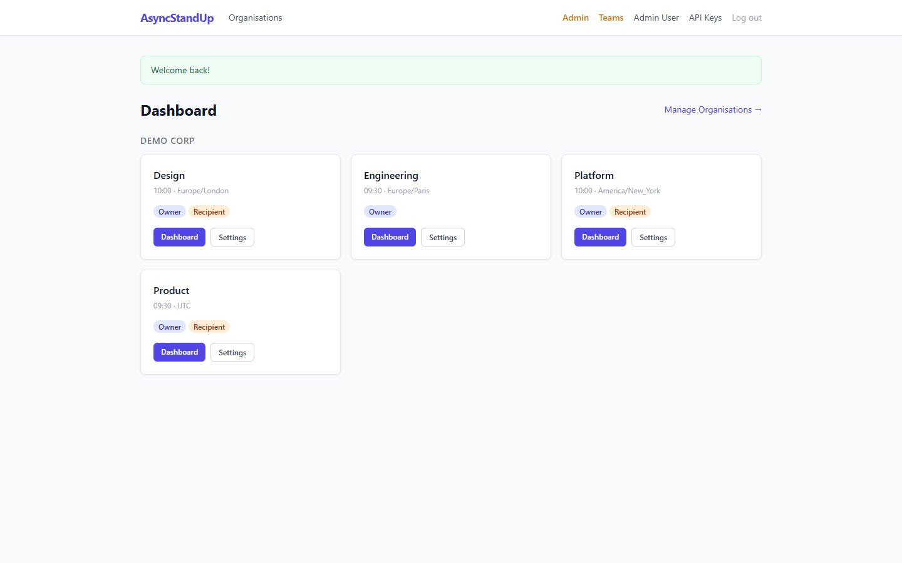
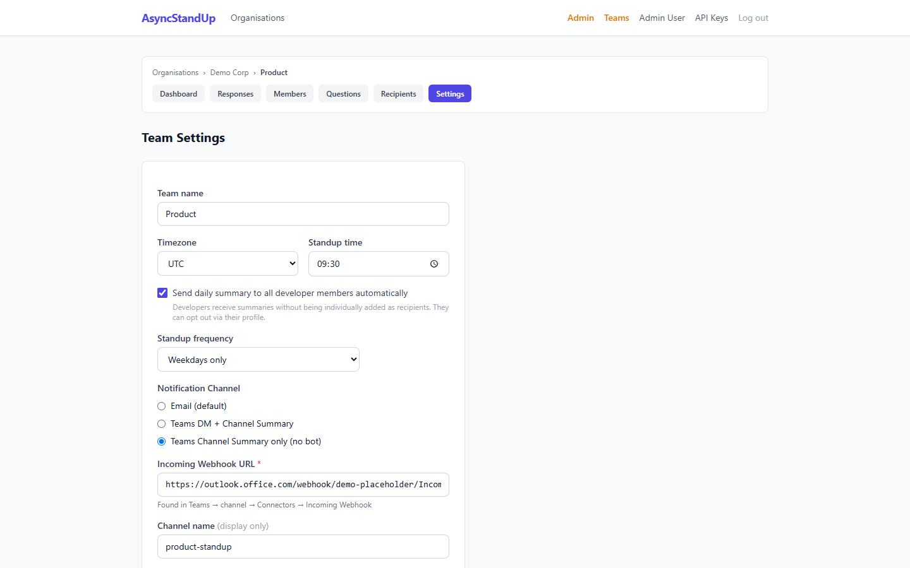
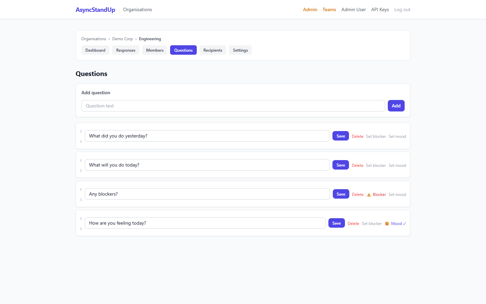
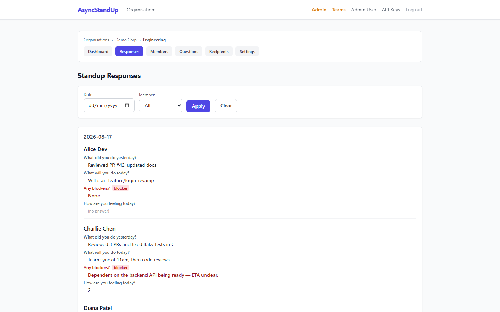
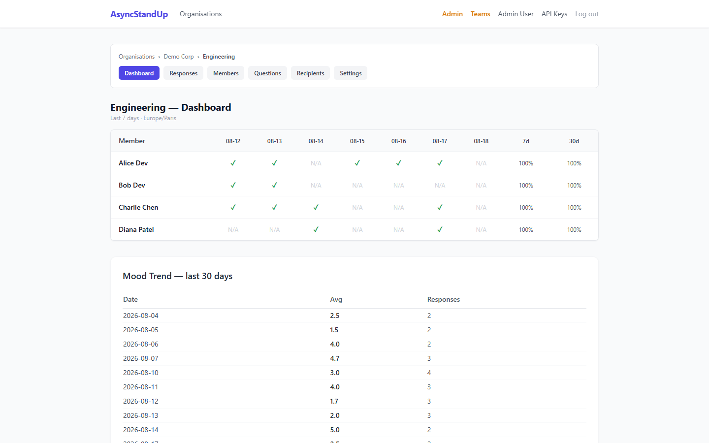
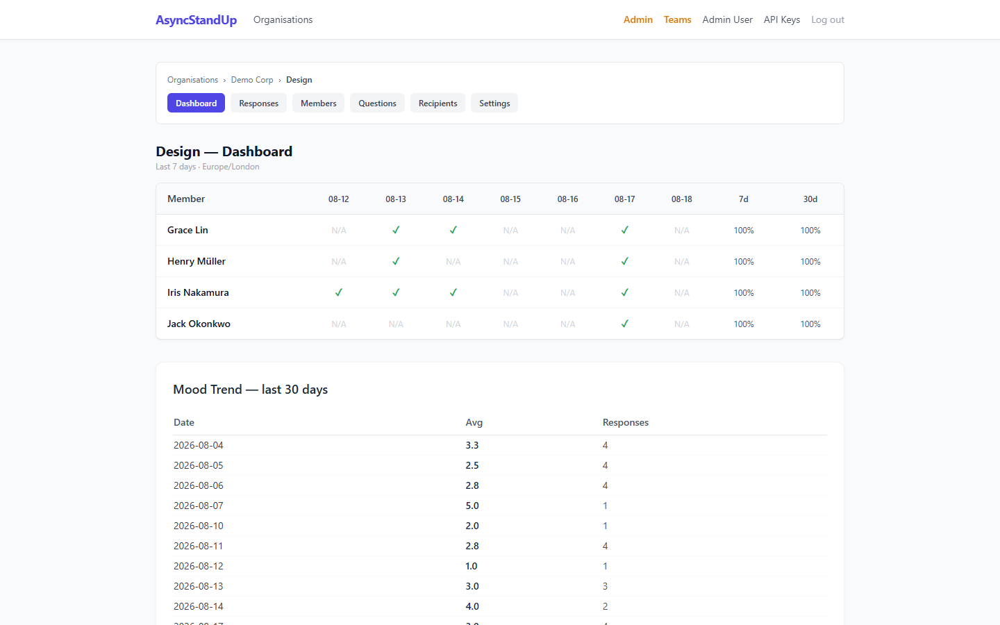
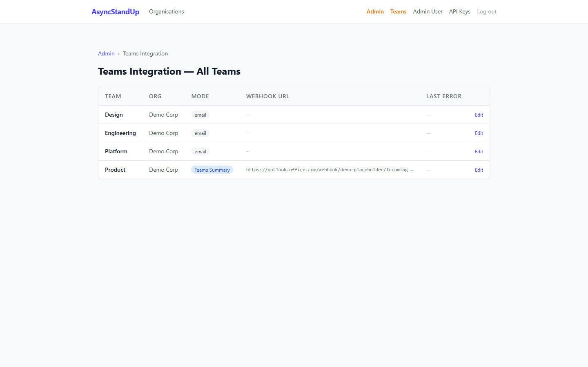
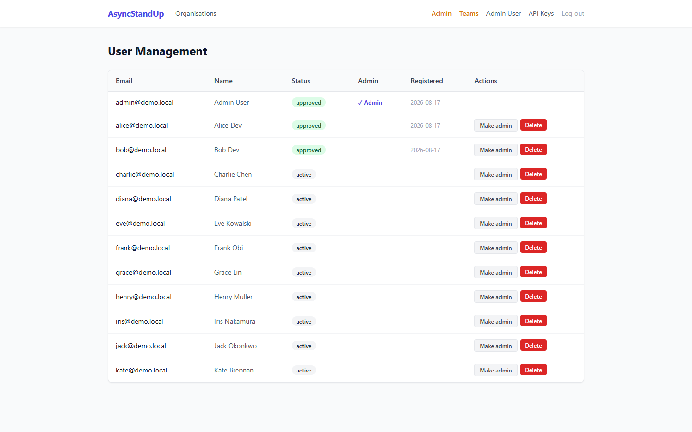
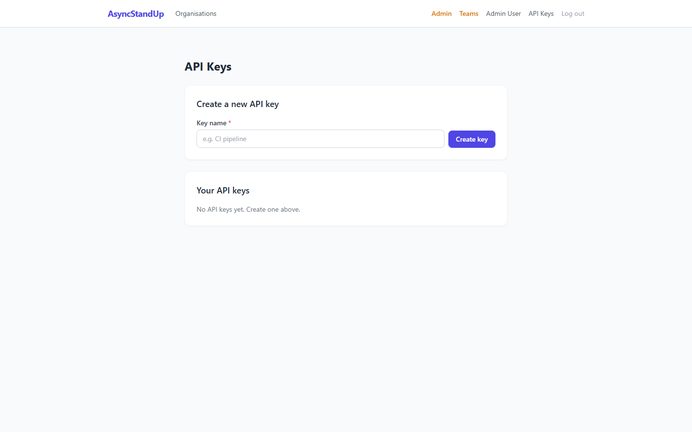

⏰ AsyncStandUp
A self-hosted async standup tool for distributed teams — no Slack, no Azure, no subscriptions. Just PHP, a database, and your own server.
Overview
AsyncStandUp replaces synchronous stand-up meetings with a scheduled async workflow. Each morning, the application emails (or Teams-messages) every developer with a set of team-specific questions. Developers respond via a web form or directly in a Teams Adaptive Card. The application collects all responses, flags blockers, tracks mood, and sends a daily summary to the team.
Everything runs from a single PHP application. No cloud vendor lock-in. No monthly subscriptions. The only external dependencies are an SMTP server and — optionally — a Microsoft Teams webhook or bot registration.

The main dashboard shows all teams, today's participation status, and quick actions.
Features
Requirements
| Component | Minimum | Notes |
|---|---|---|
| PHP | 8.3 | PDO, mbstring, openssl, json extensions required |
| Database | SQLite 3 / MySQL 5.7+ / PostgreSQL 13+ | SQLite is zero-config for small teams |
| SMTP | Any SMTP server | Required for email prompts and summaries |
| Web server | Apache / nginx / PHP built-in | mod_rewrite for API + bot webhook clean URLs |
| HTTPS | Optional for email mode; required for Teams bot DMs | Let's Encrypt is free |
| Cron | crontab access | 2 jobs, each run every minute |
Installation
1. Clone the repository
git clone https://github.com/cedric-r/asyncstandup.git
cd asyncstandup2. Configure the application
cp config/config.example.php config/config.php
# Edit config/config.php with your database, SMTP, and app settings3. Create the database
SQLite (simplest):
# Ensure the data/ directory is writable
mkdir -p data
chmod 750 data
# Schema is applied automatically on first run, or run manually:
php -r "require 'src/Db.php'; getDb(require 'config/config.php');"MySQL / PostgreSQL:
# Create the database, then apply the schema:
mysql -u root -p asyncstandup < db/schema.sql
# or
psql -U postgres asyncstandup < db/schema-postgresql.sql4. Set up cron jobs
# Run every minute — each script checks per-team time + timezone on every run
* * * * * www-data php /var/www/asyncstandup/cron/send_standups.php >> /var/log/asyncstandup.log 2>&1
* * * * * www-data php /var/www/asyncstandup/cron/send_summaries.php >> /var/log/asyncstandup.log 2>&15. Run locally (for testing)
php -S localhost:8080 -t public/
# Open http://localhost:8080Configuration
All configuration lives in config/config.php. Copy from config/config.example.php and edit:
<?php
return [
// ── Database ──────────────────────────────────────────────
'db' => [
'driver' => 'sqlite', // 'sqlite' | 'mysql' | 'pgsql'
'path' => __DIR__ . '/../data/asyncstandup.db', // SQLite only
'host' => 'localhost', // MySQL/PostgreSQL
'port' => 3306,
'name' => 'asyncstandup',
'user' => 'dbuser',
'password' => 'secret',
],
// ── SMTP ──────────────────────────────────────────────────
'smtp' => [
'host' => 'smtp.example.com',
'port' => 587,
'encryption' => 'tls', // 'tls' | 'ssl' | ''
'username' => 'user@example.com',
'password' => 'smtp-password',
'from_email' => 'standup@example.com',
'from_name' => 'AsyncStandUp',
],
// ── Application ───────────────────────────────────────────
'app' => [
'url' => 'https://standup.example.com',
'timezone' => 'Europe/Paris',
'debug' => false,
],
// ── MS Teams Bot (optional) ───────────────────────────────
'teams_bot' => [
'app_id' => 'xxxxxxxx-xxxx-xxxx-xxxx-xxxxxxxxxxxx',
'app_secret' => 'your-bot-app-secret',
'service_url' => 'https://smba.trafficmanager.net/emea/',
'bot_webhook_path' => '/bot/webhook',
],
];Organisations & Teams
The hierarchy is: Organisation → Team → Members → Questions. An admin creates an organisation, then creates teams within it. Team owners manage their own members and questions.
Team Settings

Team edit page showing the notification mode selector with Teams configuration fields.
Questions
Each team defines its own standup questions. Questions are ordered (drag to reorder), and each can be flagged as a blocker question (⚠️) or a mood question (😊). Only one blocker and one mood question per team.

Question management — toggle blocker and mood flags per question.
Submitting Standups
Developers receive a prompt each morning (email or Teams DM). They click the link and fill in their standup on a simple form. Each token is single-use and expires after the team's standup window.
If the team uses Teams DM mode, the Adaptive Card has inline text inputs — answers are submitted without leaving Teams.
Response Browser

Browse all standup responses — filter by date, member, or team. Blocker answers are highlighted in red.
Team Dashboard

Engineering team dashboard showing today's submissions, participation history, and mood trend.

Dashboard with 30-day mood tracking. The weekly dip on Wednesdays and peak on Fridays is clearly visible.
Mood Tracking
Enable mood tracking by marking one question as the mood question (😊 toggle on the Questions page). Developers answer with a number 1–5 in free text (e.g. "4 — feeling good!"). The application extracts the score automatically.
- 1 — Not great
- 2 — Below average
- 3 — Okay
- 4 — Good
- 5 — Excellent
The 30-day trend chart on the dashboard and the average score in daily summaries both draw from these scores.
Blocker Flagging
Mark one question as the blocker question (⚠️ toggle). Non-empty answers to this question are:
- Highlighted in red in the response browser
- Prefixed with ⚠️ in email and Teams summaries
- Shown with a "BLOCKER" badge in the daily summary email
Submission Reminders
Reminders are handled automatically by send_standups.php on every run — members who have not submitted by the configured reminder window receive a nudge using their existing token. No separate cron entry needed.
Configurable Frequency
| Mode | Behaviour |
|---|---|
daily | Runs every day including weekends |
weekdays | Runs Monday–Friday; skips Saturday and Sunday |
weekly | Runs once per week on the configured day (e.g. Monday) |
MS Teams Integration
AsyncStandUp supports three notification modes. Each team picks one independently:
| Mode | Prompt delivery | Answer method | Summary | Azure needed |
|---|---|---|---|---|
| Email (existing) | Web form link | None | ||
| teams-summary | Web form link | Teams channel (Adaptive Card) | None — webhook only | |
| teams | Teams DM (Adaptive Card) | Directly in Teams | Teams channel (Adaptive Card) | Bot registration (free) |
Channel Summaries (no Azure required)
- In your Teams channel → Apps → Connectors → Incoming Webhook → Create
- Copy the webhook URL
- In team settings, select Teams Channel Summary only and paste the URL
That's it. The daily summary posts to the channel as an Adaptive Card with all member responses.
Bot DM Prompts (bot registration required)
- Go to Azure Portal → Bot Services → Create → Free tier
- Note the
App IDand create a client secret (App Secret) - Set the messaging endpoint to
https://your-server.com/bot/webhook - Add to
config/config.php:'teams_bot' => [ 'app_id' => 'your-app-id', 'app_secret' => 'your-app-secret', 'service_url' => 'https://smba.trafficmanager.net/emea/', 'bot_webhook_path' => '/bot/webhook', ], - In team settings, select Teams DM + Channel Summary
public/bot/webhook.php for the TODO.

The admin Teams Integration page shows each team's notification mode, webhook URL, and any recent delivery errors.
REST API
Base URL: https://your-server.com/api/v1/
All requests require an API key in the Authorization header:
Authorization: Bearer sk-<your-64-char-key>Rate limit: 100 requests per hour per API key. Exceeding returns HTTP 429 with a Retry-After header.
curl -H "Authorization: Bearer sk-..." https://your-server.com/api/v1/teams# Optional query params: ?date=2026-08-18&page=1&per_page=20curl -X POST \
-H "Authorization: Bearer sk-..." \
-H "Content-Type: application/json" \
-d '{
"answers": {
"1": "Fixed the login bug",
"2": "Writing tests for the auth module",
"3": ""
}
}' \
https://your-server.com/api/v1/teams/1/submissionsMCP Server
AsyncStandUp ships with a Model Context Protocol server. Connect it to Claude Desktop or any MCP-compatible AI client to query and submit standups by natural language.
Starting the server
ASYNCSTANDUP_API_KEY=sk-your-key php mcp/server.phpClaude Desktop configuration
{
"mcpServers": {
"asyncstandup": {
"command": "php",
"args": ["/path/to/asyncstandup/mcp/server.php"],
"env": {
"ASYNCSTANDUP_API_KEY": "sk-your-key"
}
}
}
}Available tools
Admin Panel

User administration — approve registrations, manage roles, see last login.
Teams Integration admin — mode badges, webhook URLs, last error with timestamp.
API Key Management
Each user manages their API keys from Profile → API Keys. Keys are:
- Generated with
bin2hex(random_bytes(32))— 64-char hex, shown once only - Stored as a SHA-256 hash — the plain key is never stored
- Soft-deleted on revoke (
revoked_attimestamp) — audit trail preserved

API key management — generate named keys, view masked preview, revoke individually.
Cron Jobs
Both scripts run every minute. Each team has its own standup time and timezone configured in Team Settings. Deduplication guards prevent double-sending.
| Script | Purpose | Schedule |
|---|---|---|
cron/send_standups.php |
Standup prompts + reminders (per-team timezone check) | * * * * * |
cron/send_summaries.php |
Daily summaries (per-team summary time check) | * * * * * |
# /etc/crontab
* * * * * www-data php /var/www/asyncstandup/cron/send_standups.php >> /var/log/asyncstandup.log 2>&1
* * * * * www-data php /var/www/asyncstandup/cron/send_summaries.php >> /var/log/asyncstandup.log 2>&1frequency = weekdays are automatically skipped on weekends by the application. Teams with frequency = weekly are only triggered on their configured day.Database
| Backend | Schema file | Notes |
|---|---|---|
| SQLite | db/schema.sql (used via PHP PDO) | Zero-config; suitable for single-server deployments |
| MySQL 5.7+ | db/schema.sql | Good for multi-server or high-load deployments |
| PostgreSQL 13+ | db/schema-postgresql.sql | Full ACID compliance; recommended for production |
Switch databases by changing the db.driver key in config/config.php. All three backends use the same application code — no ORM, plain PDO with parameterised queries.
Security Notes
| Area | Status | Notes |
|---|---|---|
| Bot webhook JWT | ⚠️ Partial | aud/iss/exp validated; RS256 signature not verified. TODO before production go-live. |
| Bot token cache | ✅ Restricted | Cached to sys_get_temp_dir() with chmod 0600. |
| API keys | ✅ SHA-256 hash only | Raw key displayed once at generation; never stored in plaintext. |
| Teams webhook SSRF | ✅ Mitigated | Webhook URLs validated: HTTPS-only, FILTER_VALIDATE_URL, str_starts_with check. Bot serviceUrl restricted to known Bot Framework domains. |
| SQL injection | ✅ Parameterised | All queries use PDO prepared statements throughout. |
| XSS | ✅ Encoded | All user-supplied output through htmlspecialchars(ENT_QUOTES, 'UTF-8'). |
| CSRF | ✅ Token validation | All POST forms include and validate a CSRF token. |
| Rate limiting | ✅ API only | 100 requests/hour per API key; 429 with Retry-After on breach. |
Test Suite
php php83/php.exe tests/phpunit.phar --configuration tests/phpunit.xml| Metric | Value |
|---|---|
| Tests | 127 |
| Assertions | 255 |
| PHPStan level | 5 (0 errors) |
| Coverage | All src/ classes; all DB schemas; all API endpoints |
Tests use a fresh SQLite in-memory database per test class. No external services, no mocking of HTTP calls — all tests run against real production functions.
What Was Built (Story History)
| Story | Feature |
|---|---|
| US-1–10 | Core: teams, members, questions, email prompts, submissions, summary emails, PHPUnit suite |
| US-11–20 | Organisations, invitations, admin panel, response browser, dashboard, PDF reports |
| US-21–28 | API key auth, consensus alerting, member history, team hardening |
| US-29 | Submission reminders |
| US-30 | Configurable standup frequency |
| US-31+32 | Blocker flagging + mood tracking |
| US-33 | Public REST API (5 endpoints, API key auth, rate limiting) |
| US-34 | MCP Server (stdio, 6 tools) |
| US-35 | API key management UI (generate, list, revoke, soft-delete) |
| US-36 | MS Teams schema + per-team mode selector |
| US-37 | Teams channel summary via Incoming Webhook + Adaptive Card |
| US-38 | Bot DM prompts (proactive Adaptive Card with inline answer fields) |
| US-39 | Bot webhook endpoint — card submission handler, replay guard, confirmation DM |
| US-40 | Teams fallback error tracking + admin visibility page |